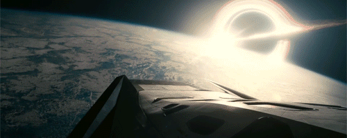
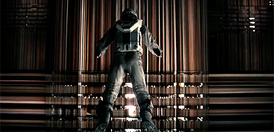
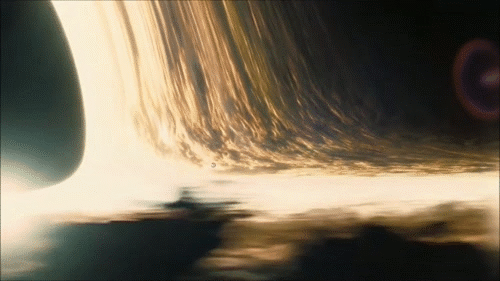
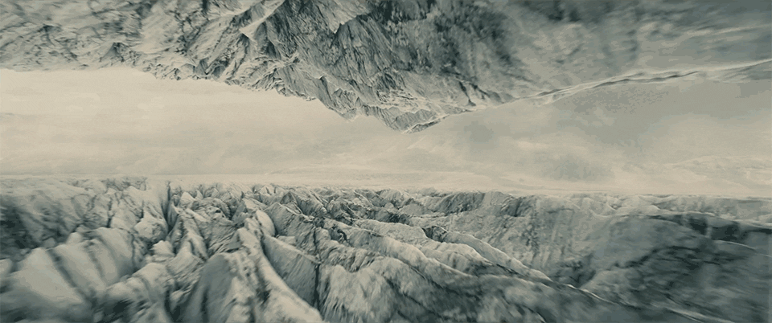

The synopsis
After seeing the Earth consuming a good part of its natural reserves, a group of astronauts receives the mission to verify possible planets to receive the world population, allowing the continuation of the species. Cooper (Matthew McConaughey) is called upon to lead the group and accepts the mission knowing he may never see his children again. Alongside Brand (Anne Hathaway), Jenkins (Marlon Sanders) and Doyle (Wes Bentley), he will continue his search for a new home. Over the years, her daughter Murph (Mackenzie Foy and Jessica Chastain) will embark on her own journey to also try to save the planet's population.
Movie scenes



